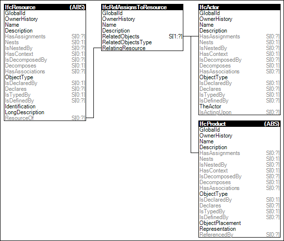

Link to this page
Link to this pageResources may have assignments indicating sources available to be used. An example of such assignment is a person fulfilling a carpenter labor resource.
Figure 74 illustrates an instance diagram.
 |
Figure 74 — Resource Assignment |